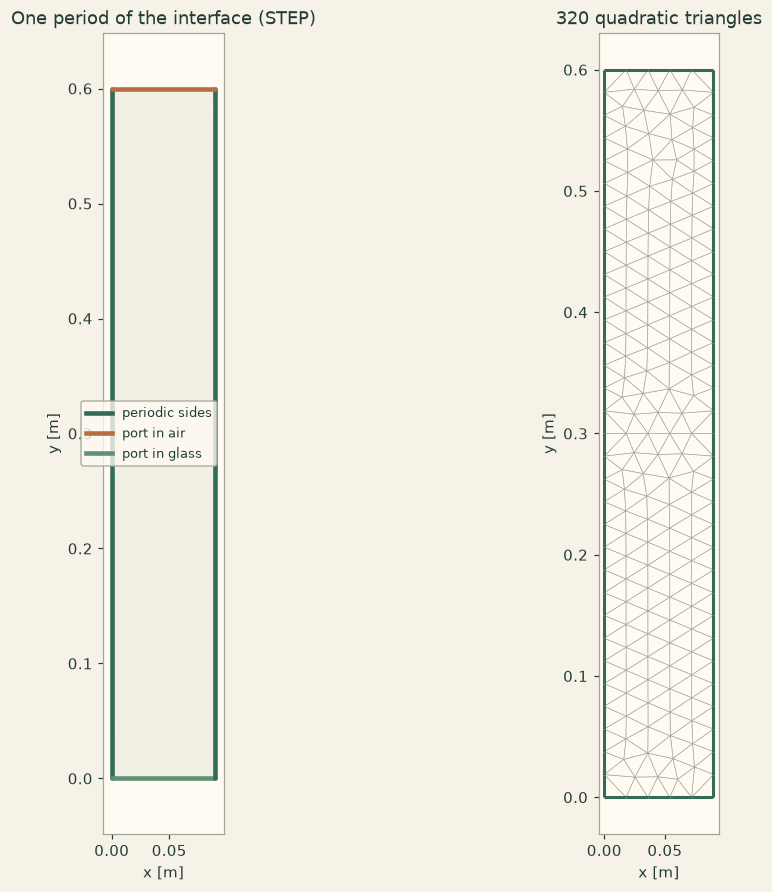

Docs › Examples › Fresnel equations at oblique incidence
Wave optics, plane waves · 2D
Fresnel equations at oblique incidence
A plane wave meets a glass surface at every angle of incidence, in both polarizations and from both sides.
Run locally with OneSimulation. The example downloads are free. Running them requires an activated runtime. The current pilot runs on macOS on Apple Silicon with CPython 3.13. Installation and activation · View pilot plans. Scope of the reference checks.

What it computes
OneSimulation cuts one period of the air-glass interface from STEP plates and solves the out-of-plane field (E_z for s, H_z for p) with quadratic triangles; Bloch periodic sides set the angle of incidence and Floquet ports feed the plane wave and absorb every diffraction order. The reflected and transmitted power comes from the port amplitudes, and the Brewster angle is searched with the simulation itself. The script that builds the STEP file comes with the notebook.
What it checks
Over 60 angles from 0 to 88.5 deg the reflectance agrees with the Fresnel equations to 2.4e-4 (s) and 3.4e-4 (p) from the air side and 1.3e-4 to 1.4e-4 from the glass side, with R + T = 1 to 1e-14; the computed Brewster angle is 56.310 deg (R_p = 6e-12) against arctan(1.5) = 56.310 deg, and total reflection starts in the sweep at 42.0 deg for a critical angle of 41.81 deg.
Geometry
The notebook starts at the import of the CAD files fresnel_oblique_incidence.step, fresnel_oblique_incidence_glass.step: STEP (AP242), readable by any CAD program, with the names of the faces that the boundary conditions use. Put them next to the notebook.

The geometry script
The script fresnel_oblique_incidence_geometry.py builds the geometry with the CAD objects of OneSimulation and writes the files. Change a dimension there, run it, and run the notebook again.
"""Geometry of the OneSimulation example "Fresnel equations at oblique incidence".
Builds, as thin plates with the CAD objects of OneSimulation, one period of a plane interface between
air and glass at 1 GHz: the whole cell, 90 mm wide (0.3 wavelengths) and 600 mm high
(fresnel_oblique_incidence.step, faces x_min and x_max periodic, y_max the port in air, y_min the
port in glass), and its lower half, the glass (fresnel_oblique_incidence_glass.step).
"""
from onesim.cad.d3 import Box
period, height, thickness = 0.09, 0.6, 0.01
Box(length=period, width=height, height=thickness).save(
"fresnel_oblique_incidence.step"
)
Box(length=period, width=height / 2, height=thickness).save(
"fresnel_oblique_incidence_glass.step"
)The notebook
The complete notebook, cell by cell. Run it to produce the figures and the comparison printout.
A plane wave of 1 GHz travels through a medium of index \(n_1\) and meets the plane surface of a medium of index \(n_2\) at the angle \(\theta_1\). It splits into a reflected wave and a refracted wave at the angle \(\theta_2\) of Snell's law, \(n_1\sin\theta_1=n_2\sin\theta_2\). How the power divides depends on the polarization:
- s (TE): the electric field is perpendicular to the plane of incidence, out of the model plane - the model solves for \(E_z\),
- p (TM): the magnetic field is perpendicular to the plane of incidence - the model solves for \(H_z\).
The interface is infinite, so one period of width \(p=90\) mm (\(0.3\lambda\)) suffices: the field at the right side of the cell is the field at the left side times the Bloch phase \(e^{\mathrm ik_xp}\) with \(k_x=n_1k_0\sin\theta_1\). The top and bottom of the cell are Floquet ports that let every plane-wave order leave without reflection and feed the incident wave. With \(p<\lambda/(2n_2)\) only the specular order propagates, for every angle.
| boundary | condition | |---|---| | x_min, x_max | Bloch periodic, \(k_x=n_1k_0\sin\theta_1\) | | y_max (air) | Floquet port, incident wave when light comes from the air | | y_min (glass) | Floquet port, incident wave when light comes from the glass |
Reference (M. Born and E. Wolf, Principles of Optics, 7th ed., §1.5.2; E. Hecht, Optics, 5th ed., §4.6). With \(c_1=\cos\theta_1\) and \(c_2=\cos\theta_2\) the amplitude reflection coefficients are
The p-reflection vanishes at the Brewster angle \(\tan\theta_B=n_2/n_1\) (56.31° from air into glass of \(n=1.5\)); from the glass side all light is reflected beyond the critical angle \(\sin\theta_c=n_2/n_1\) (41.81°).
import numpy as np
from onesim.cad.exchange import load
from onesim.materials import VACUUM_PERMEABILITY, VACUUM_PERMITTIVITY
from onesim.materials.electromagnetic import (
IsotropicElectromagneticMaterial,
RegionwiseElectromagneticMaterial,
)
from onesim.meshing import PeriodicPair, TriangularMesher
from onesim.numerics import Numerics
from onesim.numerics.fem import FiniteElement, Lagrange
from onesim.numerics.linear import ComplexSparseDirect
from onesim.physics.electromagnetics import (
BlochPeriodicBoundary,
FloquetPort,
FrequencyDomainMaxwell,
diffraction_efficiencies,
)
from onesim.simulation import Problem, Simulation
from onesim.visualization import plots, theme
from scipy.optimize import minimize_scalar
theme.set()
frequency, glass_index = 1.0e9, 1.5
light = 1 / np.sqrt(VACUUM_PERMEABILITY * VACUUM_PERMITTIVITY)
k0, wavelength = 2 * np.pi * frequency / light, light / frequencyGeometry and mesh
load reads the cell and the glass in its lower half; section cuts both at half thickness. The mesh follows the interface (embedded_regions) and has quadratic triangles of \(\lambda/16\) in air, which is \(\lambda/(16n)\) in the glass.
solids = {
name: load(f"fresnel_oblique_incidence{name}.step") for name in ("", "_glass")
}
cell = solids[""].section((0, 0, 1), origin=(0, 0, 0.005))
glass = solids["_glass"].section((0, 0, 1), origin=(0, 0, 0.005)).named("glass")
sides = cell.boundaries
mesh = TriangularMesher(
target_size=wavelength / 16, embedded_regions=(glass,)
).generate(cell)
fig = plots.figure(1, 2, size=(9, 8))
plots.geometry(
cell,
selection={
"periodic sides": sides.x_min | sides.x_max,
"port in air": sides.y_max,
"port in glass": sides.y_min,
},
labels=False,
title="One period of the interface (STEP)",
ax=fig[0],
)
plots.mesh(
mesh,
groups=("all",),
legend=False,
title=f"{mesh.cell_count} quadratic triangles",
ax=fig[1],
)
plots.show()Model
The same FrequencyDomainMaxwell model solves \(E_z\) (s) or \(H_z\) (p) on the section. For every angle the Bloch wavevector of the side pair is set from the medium the light comes from, and diffraction_efficiencies returns the power of every propagating order at both ports relative to the incident power: (0, 0) is the reflected wave when the light comes from the air, (1, 0) the transmitted one.
material = RegionwiseElectromagneticMaterial(
{"glass": IsotropicElectromagneticMaterial(relative_permittivity=glass_index**2)},
default=IsotropicElectromagneticMaterial(),
)
models = {
polarization: FrequencyDomainMaxwell(
domain=cell.domain(),
frequency=frequency,
material=material,
polarization=polarization,
phasor_convention="exp(-i*omega*t)",
amplitude_convention="peak",
)
for polarization in ("Ez", "Hz")
}
numerics = Numerics(
spatial=FiniteElement(element=Lagrange(order=2)),
linear_solver=ComplexSparseDirect(),
)
solve = lambda polarization, angle, from_air: diffraction_efficiencies(
Simulation(
problem=Problem(
name="Fresnel cell",
geometry=cell,
physics=(models[polarization],),
boundary_conditions=(
BlochPeriodicBoundary(
physics=models[polarization],
pair=PeriodicPair(sides.x_min, sides.x_max),
wavevector=(
(1.0 if from_air else glass_index)
* k0
* np.sin(np.radians(angle)),
0.0,
0.0,
),
),
FloquetPort(
physics=models[polarization],
boundary=sides.y_max,
incident_amplitude=1.0 if from_air else 0.0,
),
FloquetPort(
physics=models[polarization],
boundary=sides.y_min,
incident_amplitude=0.0 if from_air else 1.0,
),
),
),
mesh=mesh,
numerics=numerics,
).solve_stationary(),
models[polarization],
)
angles = np.arange(0.0, 89.5, 1.5)
sweeps = {
(polarization, side): [
solve(polarization, angle, side == "air") for angle in angles
]
for polarization in ("Ez", "Hz")
for side in ("air", "glass")
}Results
The reflectance is the power in the specular order at the port of incidence, the transmittance the power at the opposite port (zero beyond the critical angle, where the transmitted order is evanescent).
def fresnel(polarization, n1, n2, angle):
c1, c2 = np.cos(np.radians(angle)), np.sqrt(
1 - (n1 / n2 * np.sin(np.radians(angle))) ** 2 + 0j
)
a, b = (n1 * c1, n2 * c2) if polarization == "Ez" else (n2 * c1, n1 * c2)
return np.abs((a - b) / (a + b)) ** 2
ports = {"air": (0, 1), "glass": (1, 0)}
indices = {"air": (1.0, glass_index), "glass": (glass_index, 1.0)}
reflectance = {
key: np.array([e[(ports[key[1]][0], 0)] for e in sweep])
for key, sweep in sweeps.items()
}
transmittance = {
key: np.array([e.get((ports[key[1]][1], 0), 0.0) for e in sweep])
for key, sweep in sweeps.items()
}
exact = {key: fresnel(key[0], *indices[key[1]], angles) for key in sweeps}
names = {"Ez": "s (E_z)", "Hz": "p (H_z)"}
print(
"incidence from polarization max |R - R_Fresnel| max |T - (1 - R_Fresnel)| max |R + T - 1|"
)
for key in sweeps:
print(
f"{key[1]:15s} {names[key[0]]:12s} {np.abs(reflectance[key] - exact[key]).max():19.2e} "
f"{np.abs(transmittance[key] - (1 - exact[key])).max():25.2e} {np.abs(reflectance[key] + transmittance[key] - 1).max():15.1e}"
)
print("\nangle R_s computed R_s Fresnel R_p computed R_p Fresnel (from air)")
for angle in (0.0, 30.0, 45.0, 60.0, 75.0, 88.5):
i = int(np.argmin(np.abs(angles - angle)))
print(
f"{angles[i]:5.1f} {reflectance[('Ez', 'air')][i]:12.6f} {exact[('Ez', 'air')][i]:11.6f} "
f"{reflectance[('Hz', 'air')][i]:12.6f} {exact[('Hz', 'air')][i]:11.6f}"
)The Brewster angle is searched with the simulation itself: the angle at which the computed p-reflectance is smallest. The critical angle shows as the first angle with total reflection.
brewster = minimize_scalar(
lambda angle: solve("Hz", angle, True)[(0, 0)],
bounds=(50.0, 62.0),
method="bounded",
options={"xatol": 1e-3},
)
critical = angles[np.argmax(reflectance[("Ez", "glass")] > 1 - 1e-6)]
print(
f"\nBrewster angle: computed {brewster.x:.3f} deg (R_p = {brewster.fun:.1e}), "
f"exact arctan(n) = {np.degrees(np.arctan(glass_index)):.3f} deg"
)
print(
f"total reflection from the glass side from {critical:.1f} deg on in the sweep; "
f"critical angle arcsin(1/n) = {np.degrees(np.arcsin(1 / glass_index)):.2f} deg"
)Figure
Reflectance and transmittance against the angle of incidence, from the air side and from the glass side, with the Fresnel equations dashed.
fig = plots.figure(1, 2, size=(15, 5.5))
for panel, side in zip((fig[0], fig[1]), ("air", "glass")):
plots.line(
angles,
{f"R {names[p]}": reflectance[(p, side)] for p in ("Ez", "Hz")}
| {f"T {names[p]}": transmittance[(p, side)] for p in ("Ez", "Hz")},
reference={f"R {names[p]}": exact[(p, side)] for p in ("Ez", "Hz")}
| {f"T {names[p]}": 1 - exact[(p, side)] for p in ("Ez", "Hz")},
vlines={"Brewster": np.degrees(np.arctan(indices[side][1] / indices[side][0]))}
| (
{"critical": np.degrees(np.arcsin(1 / glass_index))}
if side == "glass"
else {}
),
xlimits=(0, 90),
ylimits=(0, 1.02),
xlabel="angle of incidence [deg]",
ylabel="fraction of the incident power",
title=f"Light from the {side} side (dashed: Fresnel)",
legend="center left",
ax=panel,
)
plots.show()Going further
Give the glass a thin coating as a third region in fresnel_oblique_incidence_geometry.py: the same cell then shows the interference of a thin film. A cell wider than \(\lambda/(2n)\) lets further diffraction orders appear once a grating is etched into the surface.